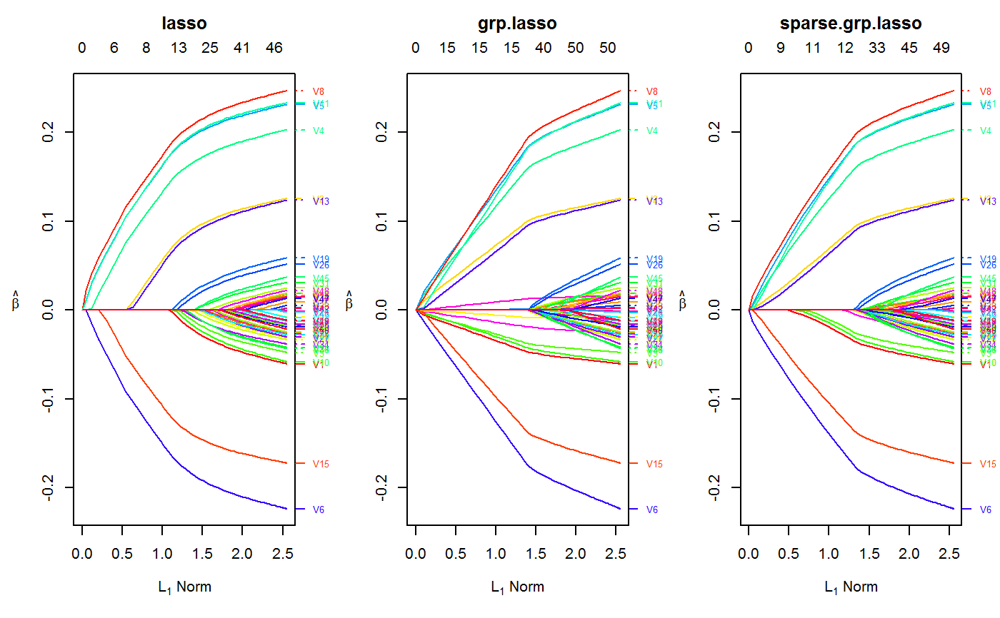
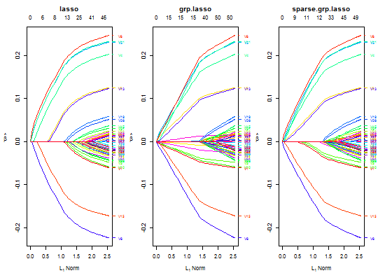

Orthogonalizing EM
oem( x, y, family = c("gaussian", "binomial"), penalty = c("elastic.net", "lasso", "ols", "mcp", "scad", "mcp.net", "scad.net", "grp.lasso", "grp.lasso.net", "grp.mcp", "grp.scad", "grp.mcp.net", "grp.scad.net", "sparse.grp.lasso"), weights = numeric(0), lambda = numeric(0), nlambda = 100L, lambda.min.ratio = NULL, alpha = 1, gamma = 3, tau = 0.5, groups = numeric(0), penalty.factor = NULL, group.weights = NULL, standardize = TRUE, intercept = TRUE, maxit = 500L, tol = 1e-07, irls.maxit = 100L, irls.tol = 0.001, accelerate = FALSE, ncores = -1, compute.loss = FALSE, hessian.type = c("upper.bound", "full") )
| x | input matrix of dimension n x p or |
|---|---|
| y | numeric response vector of length |
| family |
|
| penalty | Specification of penalty type. Choices include:
Careful consideration is required for the group lasso, group MCP, and group SCAD penalties. Groups as specified by the |
| weights | observation weights. Not implemented yet. Defaults to 1 for each observation (setting weight vector to length 0 will default all weights to 1) |
| lambda | A user supplied lambda sequence. By default, the program computes
its own lambda sequence based on |
| nlambda | The number of lambda values. The default is 100. |
| lambda.min.ratio | Smallest value for lambda, as a fraction of |
| alpha | mixing value for |
| gamma | tuning parameter for SCAD and MCP penalties. must be >= 1 |
| tau | mixing value for |
| groups | A vector of describing the grouping of the coefficients. See the example below. All unpenalized variables should be put in group 0 |
| penalty.factor | Separate penalty factors can be applied to each coefficient. This is a number that multiplies lambda to allow differential shrinkage. Can be 0 for some variables, which implies no shrinkage, and that variable is always included in the model. Default is 1 for all variables. |
| group.weights | penalty factors applied to each group for the group lasso. Similar to |
| standardize | Logical flag for x variable standardization, prior to fitting the models.
The coefficients are always returned on the original scale. Default is |
| intercept | Should intercept(s) be fitted ( |
| maxit | integer. Maximum number of OEM iterations |
| tol | convergence tolerance for OEM iterations |
| irls.maxit | integer. Maximum number of IRLS iterations |
| irls.tol | convergence tolerance for IRLS iterations. Only used if |
| accelerate | boolean argument. Whether or not to use Nesterov acceleration with adaptive restarting |
| ncores | Integer scalar that specifies the number of threads to be used |
| compute.loss | should the loss be computed for each estimated tuning parameter? Defaults to |
| hessian.type | only for logistic regression. if |
An object with S3 class "oem"
Shifeng Xiong, Bin Dai, Jared Huling, and Peter Z. G. Qian. Orthogonalizing EM: A design-based least squares algorithm. Technometrics, 58(3):285-293, 2016. http://amstat.tandfonline.com/doi/abs/10.1080/00401706.2015.1054436
set.seed(123) n.obs <- 1e4 n.vars <- 50 true.beta <- c(runif(15, -0.25, 0.25), rep(0, n.vars - 15)) x <- matrix(rnorm(n.obs * n.vars), n.obs, n.vars) y <- rnorm(n.obs, sd = 3) + x %*% true.beta fit <- oem(x = x, y = y, penalty = c("lasso", "grp.lasso", "sparse.grp.lasso"), groups = rep(1:10, each = 5)) layout(matrix(1:3, ncol = 3)) plot(fit) plot(fit, which.model = 2)#> Warning: collapsing to unique 'x' values#> Warning: collapsing to unique 'x' values# the oem package has support for # sparse design matrices library(Matrix) xs <- rsparsematrix(n.obs * 25, n.vars * 2, density = 0.01) ys <- rnorm(n.obs * 25, sd = 3) + as.vector(xs %*% c(true.beta, rep(0, n.vars)) ) x.dense <- as.matrix(xs) system.time(fit <- oem(x = x.dense, y = ys, penalty = c("lasso", "grp.lasso"), groups = rep(1:20, each = 5), intercept = FALSE, standardize = FALSE))#> user system elapsed #> 25.91 0.14 27.37system.time(fits <- oem(x = xs, y = ys, penalty = c("lasso", "grp.lasso"), groups = rep(1:20, each = 5), intercept = FALSE, standardize = FALSE, lambda = fit$lambda))#> user system elapsed #> 0.56 0.00 0.71#> [1] 1.582068e-15#> [1] 1.609823e-15# logistic y <- rbinom(n.obs, 1, prob = 1 / (1 + exp(-x %*% true.beta))) system.time(res <- oem(x, y, intercept = FALSE, penalty = c("lasso", "sparse.grp.lasso", "mcp"), family = "binomial", groups = rep(1:10, each = 5), nlambda = 10, irls.tol = 1e-3, tol = 1e-8))#> user system elapsed #> 3.98 0.03 4.30# sparse design matrix xs <- rsparsematrix(n.obs * 2, n.vars, density = 0.01) x.dense <- as.matrix(xs) ys <- rbinom(n.obs * 2, 1, prob = 1 / (1 + exp(-x %*% true.beta))) system.time(res.gr <- oem(x.dense, ys, intercept = FALSE, penalty = "grp.lasso", family = "binomial", nlambda = 10, groups = rep(1:5, each = 10), irls.tol = 1e-3, tol = 1e-8))#> user system elapsed #> 1.97 0.03 2.11system.time(res.gr.s <- oem(xs, ys, intercept = FALSE, penalty = "grp.lasso", family = "binomial", nlambda = 10, groups = rep(1:5, each = 10), irls.tol = 1e-3, tol = 1e-8))#> user system elapsed #> 0.59 0.00 0.69#> [1] 6.647085e-05